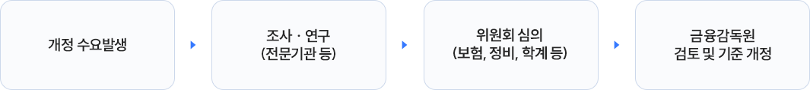

최근의 교통사고는 운행차량 증가에 따라 단순 범퍼 파손, 스크래치, 문콕 등 가벼운 접촉사고가 대부분을 차지하고 있습니다. 그러나 수리비를 보험사가
부담하는 자동차보험의 특성상 고객 성향 및 정비업체에 따라 수리방법 및 범위가 달라지는 문제가 발생하고 있습니다.
특히 외장부품의 경우 수리 및 교환에 대한 명확한 기준이 없어 경미한 손상임에도 불구하고 교환율이 높은 실정입니다.
수리가 가능함에도 무분별한 교환이 이루어짐에 따라 과도한 수리비가 지급되어 선량한 보험가입자의 보험료 인상으로 귀결될 뿐만 아니라 환경문제 야기 등
사회적, 국가적 낭비를 초래하고 있습니다.
따라서, 경미한 사고에 대한 적정한 수리기준을 정립하고 파손 형태별 수리기법을 마련하여, 수리 및 교환에 대한 명확한 기준을 정립함으로써 불합리한
수리관행이 개선될 수 있을 것입니다.
근거
자동차보험 표준약관 제21조 4항 및 별표 2
추진경과
금융위원회, 국토부 및 금융감독원 등은 ‘15.11월 「고가차량 관련 자동차보험 합리화 방안*」을 발표하고 제도 개선을 추진
* ①경미한 사고 수리기준 규범화 ②고가차 렌트비 경감 도모 ③미수선수리비 지급관행 개선 ④자동차보험 요율 개선
금융감독원은 「고가차량 관련 자동차보험 합리화 방안」의 후속조치로 입법예고, 규제개혁위원회 심의 등을 거쳐 범퍼 긁힘 등 경미한 손상은 복원수리비만 지급하도록 표준약관을 개정
(‘16.7.1부터 시행)
외장부품에 대한 표준 수리기준 정립을 위해 전문 평가기관(학계, 보험개발원 자동차기술연구소, 자동차안전연구원 등)에 의뢰하여 외장부품의 성능·품질시험 및
안전성 연구를 실시하였다.
개정절차
법령의 개정, 자동차수리 및 보상 문화, 사회통념의 변화 등에 의해 개정수요가 발생하면, 각 분야 전문가의 심층검토 및 합리적 의사결정을 거친 후에
금융감독원의 검토 후에 수리기준의 개정이 결정됩니다.

1. 범퍼(플라스틱 소재)
손상유형 분류기준
자동차의 기능과 안전성을 고려할 때 부품교체 없이 복원이 가능한 손상을 의미합니다.
※차량모델별 요율은 보험회사별 자율적용
해당영역은 좌,우 스크롤이 가능합니다.
범퍼의 손상유형 분류기준을 구분, 유형, 손상상태설명으로 나누어 설명한 테이블입니다.
구분
유형
손상상태 설명
경미한 손상
제 1유형
투명 코팅막만 벗겨진 도막손상(도장막 손상 없음)
제 2유형
투명 코팅막과 도장막(색상)이 동시에 벗겨진 손상(범퍼소재 손상 없음)
제 3유형
긁힘, 찍힘 등으로 도장막과 함께 범퍼소재의 일부가 손상(구멍 뚫림 없음)
기타손상
· 범퍼 일부분이 찢어진 손상, 함몰, 꺾임, 구멍 등이 생긴 상태 등(경미한 손상의 복원수리 방법으로 복원이
불가능한 손상)· 기타 기존 파손으로 사고부위와 동일 부위를 복원수리한 전례가 있어 경미손상 수리기준을 적용하면 범퍼의 품질
및 내구성에 영향을 줄 것으로 예상되는 경우
손상유형 예시
긁힘에 의한 투명막 손상(제 1유형)
긁힘에 의한 투명막 손상(제1유형)
긁힘에 의한 색상층 손상(제 2유형)
도막이 박리된 손상(제 2유형)
도막의 긁힘 손상(제 2유형)
범퍼 소재의 긁힘 손상(제 3유형)
범퍼 소재가 찢어진 손상(기타손상)
범퍼 소재가 함몰된 손상(기타손상)
범퍼 소재가 구멍난 손상(기타손상)
2. 기타 외장부품
적용 대상 부품
후드, 프런트 펜더, 프런트 도어, 리어 도어, 리어 펜더, 트렁크 리드, 백도어 등 7개 외장부품에 대해 적용이 가능합니다.
('19.5.1 보험계약(책임개시)부터 적용)
손상유형 분류기준
자동차의 기능과 안전성을 고려할 때 부품교체 없이 복원이 가능한 손상을 의미합니다.
※차량모델별 요율은 보험회사별 자율적용
해당영역은 좌,우 스크롤이 가능합니다.
기타 외장부품의 손상유형 분류기준을 구분, 유형, 손상상태설명으로 나누어 설명한 테이블입니다.
구분
유형
손상상태 설명
경미한 손상
제 1유형
투명 코팅막만 벗겨진 도막손상(도장막 손상 없음)
제 2유형
투명 코팅막과 도장막(색상)이 동시에 벗겨진 손상(외판소재 손상 없음)
제 3유형
도장막과 함께 외판 소재가 손상되어 퍼티 및 판금작업으로 복원이 가능한 손상
기타손상
·판금 부위 과다, 소재의 찢어짐, 구멍 등 손상
손상유형 예시
긁힘에 의한 투명막 손상(제 1유형)
긁힘에 의한 도장막 손상(제2유형)
찍힘에 의한 도장막 손상(제2유형)
찍힘에 의한 소재의 손상(제3유형)
긁힘에 의한 소재의 손상(제3유형)
긁힘에 의한 소재의 손상(제3유형)
소재의 긁힘, 꺾임 손상(제3유형)
소재의 긁힘, 꺾임 손상(기타손상)
소재의 천공 손상(기타손상)
부품 교환이 가능한 손상
다음은 일반적인 외장부품의 교환 조건입니다. 교환 조건인 경우에도 정비업체가 하자 없이 수리가 가능하다고 판단하거나 차량 소유자가 원할 경우, 경제성 등을 고려하여 부품교체
없이 복원수리가 가능합니다.
외장부품 공통사항
해당영역은 좌,우 스크롤이 가능합니다.
부품교환이 가능한 손상 중 외장부품 공통사항에 해당하는 조건을 구분, 교환가능조건, 교환사유로 나누어 설명한 테이블입니다.
구분
교환 가능 조건
교환 사유
외장부품 (공통)
차량 노후로 부식이 진행된 부위가 충돌사고 등으로 손상된 경우
수리(연마, 판금, 방청) 후에도 내구성 확보가 곤란
부품이 절단(관통) 손상된 경우
패널 용접 등으로 복원수리가 가능하나 교환 작업 상당의 작업성(수리범위)을 요함
몰딩이 부착되는 프레스 가공(요철, 굴곡 등) 부위가 손상 (꺾임, 함몰, 절단)되어 몰딩의 조립이 어려운 경우
틈새 이격, 몰딩 이탈 등의 우려가 있으며, 미관 회복이 곤란
헤밍(가장자리) 부위 손상으로 외측 패널(스킨)과 내측 패널이 이탈된 경우
내·외측 패널의 이격으로 수리 후 소음(진동)이 발생하거나, 사고 이전의 성능 회복이 곤란할 수 있음
부품교환이 가능한 손상 중 부품별 교환 가능조건에 해당하는 부분을 구분, 교환가능조건, 교환사유로 나누어 설명한 테이블입니다.
구분
교환 가능 조건
교환 사유
도어 (프런트/리어)
내부 임팩트 바가 손상된 경우
유리 승·하강 시 간섭의 우려가 있음 안전성 확보가 어려움
프런트 펜더
프런트 도어와 인접한(연결된) 부위의 꺾임 손상
내·외측 패널의 이격으로 소음(진동)이 발생될 수 있으며 사고 이전의 성능 회복 곤란
후드
외측(스킨)과 내측 패널이 상호 이탈된 경우
내·외측 패널의 이격으로 소음(진동)이 발생될 수 있으며 사고 이전의 성능 회복 곤란
리어 펜더
리어 컴비네이션 램프가 조립되는 모서리 부위가 손상된 경우
판금 난이도가 있으며, 수리 후 리어 펜더와 컴비네이션 램프의 단차가
발생할 우려가 있음
트렁크 리드
백피니셔가 조립되는 모서리(프레스 라인)부위가 손상된 경우
백피니셔와 스킨간의 이격 발생(틈새 이격, 몰딩 이탈 등) 우려가 있음
백도어
뒷유리 인접(모서리) 부위의 꺾임 손상
판금 난이도가 있으며, 뒷유리 장착 불량 등의 우려가 있음
1. 범퍼(플라스틱 소재)
손상유형에 따른 수리기준
제 3유형까지는 범퍼의 교환없이 수리를 통한 원상회복이 가능하며, 기타 손상 유형 범퍼도 차주가 원할 경우 수리가 가능합니다.
(다만, 수리비용이 부품교체 비용보다 큰 경우와 복원수리 후 하자발생이 우려되는 경우에는 교환작업을 검토해야 합니다.)
※ 제 3유형의 품질인증부품 교체의 경우 ‘23.1.1부터 책임개시일이 시작되는 자동차보험계약에 적용
해당영역은 좌,우 스크롤이 가능합니다.
손상유형에 따른 수리기준 테이블입니다.
구분
경미한 손상
기타 손상
제 1유형
제 2유형
제 3유형
경미손상 수리기준
경미한 손상에 해당하므로 ‘경미손상 수리기준’을 적용하여 부품교체 없이 복원수리 시행
품질인증부품으로 교체 시행. 다만, 품질인증부품이 없는 경우 부품교체없이 복원수리 시행
부품교체 가능
※ 단, 정비업체가 하자 없이 수리가 가능하다고 판단하거나 차량소유자가 원할 경우,경제성 등을 고려하여 부품 교체없이 복원수리
※ 다만, 범퍼커버는 경미한 손상이라도 범퍼 내부의 브라켓,레일등이 파손된 경우에는 부품교체 가능
수리방법 (예시)
범퍼탈착여부
범퍼 미 탈착
손상부위 및 부품교체에 따라 범퍼 탈착여부 결정
범퍼탈착
소재복원
해당없음
플라스틱 퍼티를 이용한 복원수리 또는 부품교체
손상부위 보강(패치작업) 및 플라스틱 퍼티를 이용한 복원수리
도장복원
폴리싱(광택작업)
보수도장
2. 기타 외장부품
손상유형에 따른 수리기준
제 3유형까지는 부품의 교환없이 수리를 통한 원상회복이 가능하며, 기타손상의 경우 차량의 안전성, 수리품질, 경제성 등을 고려하여 수리방법을 결정할 수 있습니다.
(다만, 수리비용이 부품교체 비용보다 큰 경우와 복원수리 후 하자발생이 우려되는 경우에는 교환작업을 검토해야 합니다.) ※ 제 3유형의 품질인증부품 교체의 경우 ‘23.1.1부터 책임개시일이 시작되는 자동차보험계약에 적용
해당영역은 좌,우 스크롤이 가능합니다.
손상유형에 따른 수리기준 테이블입니다.
구분
경미한 손상
기타 손상
제 1유형
제 2유형
제 3유형
경미손상 수리기준
경미한 손상에 해당하므로 ‘경미손상 수리기준’을 적용하여 부품교체 없이 복원수리 시행
품질인증부품으로 교체 시행. 다만, 품질인증부품이 없는 경우 부품교체없이 복원수리 시행
차량의 안전성, 수리품질, 경제성 등을 고려하여 수리방법 결정
수리방법 (예시)
소재복원
해당없음
퍼티를 이용한 손상 복원 또는 부품 교체
판금수리 (복원이 불가능한 경우 부품 교체)
도장복원
폴리싱(광택)
보수도장
교환조건 (예시)
- 수리비용이 교환비용(간접손해 포함)에 비해 상대적으로 높은 경우- 이중패널 부품의 해밍(가장자리)부위 손상으로 내측패널이 이탈된 경우- 부품에 파단(찢어짐)이나 천공이 발생한 경우- 통상의 수리기술로 복원이 어려운 손상(복원수리 가능한 업체가 없는 경우)등
1. 범퍼(플라스틱 소재)
다음은 정비현장에서 통용되는 수리방법 예시입니다.
제 1유형
1. 폴리싱(광택)
미세한 긁힘 부위는 광택 약품 및 광택 기계를 이용하여 제거한다.
· 폴리싱 : 도장면의 결함을 제거하기 위하여 투명막을 연마하여 도장품질을 높이는 작업
제 2유형
1. 서페이서 / 베이스 도장
샌딩이 완료된 범퍼에 서페이서*를 도장 한 후 건조한다.
*베이스 도료의 부착성을 높이기 위한 페인트
차체의 색상에 맞는 베이스*(색상)를 도장한다.
*차량의 기본 색상을 내는 페인트
2. 클리어 도장
베이스의 보호와 광택을 위해 클리어*(투명)를 도장한다.
* 도장의 내구성 및 품질 확보를 위한 도장공정 마지막에 도포하는 페인트
제 3유형
1. 세척 및 퍼티 도포
도장면의 오염물을 깨끗이 세척한다. 손상된 부위를 샌딩한 후 플라스틱 퍼티* 를 도포 및 건조한다.
*소재의 굴곡 등을 제거하고 평탄화하기 위해 사용되는 재료
·플라스틱 범퍼의 복원은 재질과 특성에 적합한 플라스틱퍼티를 사용해야 수리 후 크랙등의 도정결함을 예방할 수 있음
2. 퍼티 샌딩
플라스틱 퍼티를 굴곡과 형상에 맞게 샌딩*하여 원형을 복원한다.
* 연마기를 이용하여 도장할 면을 평탄화하는 작업
3. 서페이서 / 베이스 도장
샌딩이 완료된 범퍼에 서페이서를 도장 한 후 건조한다.
차체의 색상에 맞는 베이스(색상)를 도장한다.
4. 클리어 도장
베이스의 보호와 광택을 위해 클리어(투명)를
도장한다.
기타 손상
1. 세척 및 퍼티 도포(패치부착)
도장면의 오염물을 깨끗이 세척한다.
손상된 부위를 샌딩한 후 범퍼보수 전용 패치 및
퍼티를 부착, 도포 및 건조한다.
2. 퍼티 샌딩
플라스틱 퍼티를 굴곡과 형상에 맞게 샌딩하여 원형을 복원한다.
3. 서페이서 / 베이스 도장
샌딩이 완료된 범퍼에 서페이서를 도장 한 후 건조한다.
차체의 색상에 맞는 베이스(색상)를 도장한다.
4. 클리어 도장
베이스의 보호와 광택을 위해 클리어(투명)를
도장한다.
2. 기타 외장부품
다음은 정비현장에서 통용되는 수리방법 예시입니다.
제 1유형
1. 폴리싱(광택)
미세한 긁힘 부위는 광택 약품 및 광택 기계를 이용하여 제거한다.
· 폴리싱 : 도장면의 결함을 제거하기 위하여 투명막을 연마하여 도장품질을 높이는 작업
제 2유형
1. 서페이서 / 베이스 도장
샌딩이 완료된 범퍼에 서페이서*를 도장 한 후 건조한다.
*베이스 도료의 부착성을 높이기 위한 페인트
차체의 색상에 맞는 베이스*(색상)를 도장한다.
*차량의 기본 색상을 내는 페인트
2. 클리어 도장
베이스의 보호와 광택을 위해 클리어*(투명)를 도장한다.
* 도장의 내구성 및 품질 확보를 위한 도장공정 마지막에 도포하는 페인트
제 3유형
1. 판금수리(필요시)
손상된 패널을 스폿 덴트 풀러, 해머, 플렉시블
샌더 등을 이용하여 판금수리 한다.
패널 내부의 부식방지를 위해 방청제를 도포한다.
2. 퍼티 도포 및 샌딩
손상된 부위를 샌딩한 후 퍼티를 도포 및 건조한다.
퍼티를 굴곡과 형상에 맞게 샌딩하여 원형을
복원한다.
3. 서페이서 / 베이스 도장
샌딩이 완료된 범퍼에 서페이서를 도장 한 후 건조한다.
차체의 색상에 맞는 베이스(색상)를 도장한다.
4. 클리어 도장
베이스의 보호와 광택을 위해 클리어(투명)를
도장한다.
보험개발원 고객센터
고객문의 & FAQ
경미손상 관련 상담은 콜센터 (☏ 031-644-1646 또는 1679)로 문의하시기 바랍니다.
아래에 링크된 고객문의 게시판에 사고 관련 영상이나 사진, 관련 서류 등을 제출하시면
경미손상 수리기준 심의위원회, 전문가 등의 보다 정확한 상담 서비스가 가능합니다.
보험개발원 홈페이지(www.kidi.or.kr)에 ‘경미손상 수리기준’이 게시되어 있고, ‘경미손상 수리기준’ 메뉴를 클릭한 후 ‘고객문의 & FAQ‘ 화면 상단의
‘고객문의 게시판’ 버튼을 클릭하면 상담이 가능합니다.
* 사고 관련 영상이나 사진, 관련 서류 등을 홈페이지에 제출하면, 경미손상 수리기준 심의위원회, 상담 전문가 등의 보다 정확한 상담 서비스가 가능
- 아울러, 보험개발원 경미손상 수리기준 상담센터*로 연락하면 전화상담을 받을 수 있습니다.
* 경미손상 콜센터(☏ 031-644-1686 또는 1679)로 전화 후 상담원 연결
A
보험개발원 홈페이지(www.kidi.or.kr)에 ‘경미손상 수리기준’이 게시되어 있고, ‘경미손상 수리기준’ 메뉴를 클릭한 후 ‘고객문의 & FAQ‘ 화면 상단의
‘고객문의 게시판’ 버튼을 클릭하면 상담이 가능합니다.
* 사고 관련 영상이나 사진, 관련 서류 등을 홈페이지에 제출하면, 경미손상 수리기준 심의위원회, 상담 전문가 등의 보다 정확한 상담 서비스가 가능
- 아울러, 보험개발원 경미손상 수리기준 상담센터*로 연락하면 전화상담을 받을 수 있습니다.
* 경미손상 콜센터(☏ 031-644-1686 또는 1679)로 전화 후 상담원 연결
A
보험개발원 홈페이지(www.kidi.or.kr)에 ‘경미손상 수리기준’이 게시되어 있고, ‘경미손상 수리기준’ 메뉴를 클릭한 후 ‘고객문의 & FAQ‘ 화면 상단의
‘고객문의 게시판’ 버튼을 클릭하면 상담이 가능합니다.
* 사고 관련 영상이나 사진, 관련 서류 등을 홈페이지에 제출하면, 경미손상 수리기준 심의위원회, 상담 전문가 등의 보다 정확한 상담 서비스가 가능
- 아울러, 보험개발원 경미손상 수리기준 상담센터*로 연락하면 전화상담을 받을 수 있습니다.
* 경미손상 콜센터(☏ 031-644-1686 또는 1679)로 전화 후 상담원 연결
A
보험개발원 홈페이지(www.kidi.or.kr)에 ‘경미손상 수리기준’이 게시되어 있고, ‘경미손상 수리기준’ 메뉴를 클릭한 후 ‘고객문의 & FAQ‘ 화면 상단의
‘고객문의 게시판’ 버튼을 클릭하면 상담이 가능합니다.
* 사고 관련 영상이나 사진, 관련 서류 등을 홈페이지에 제출하면, 경미손상 수리기준 심의위원회, 상담 전문가 등의 보다 정확한 상담 서비스가 가능
- 아울러, 보험개발원 경미손상 수리기준 상담센터*로 연락하면 전화상담을 받을 수 있습니다.
* 경미손상 콜센터(☏ 031-644-1686 또는 1679)로 전화 후 상담원 연결
A
보험개발원 홈페이지(www.kidi.or.kr)에 ‘경미손상 수리기준’이 게시되어 있고, ‘경미손상 수리기준’ 메뉴를 클릭한 후 ‘고객문의 & FAQ‘ 화면 상단의
‘고객문의 게시판’ 버튼을 클릭하면 상담이 가능합니다.
* 사고 관련 영상이나 사진, 관련 서류 등을 홈페이지에 제출하면, 경미손상 수리기준 심의위원회, 상담 전문가 등의 보다 정확한 상담 서비스가 가능
- 아울러, 보험개발원 경미손상 수리기준 상담센터*로 연락하면 전화상담을 받을 수 있습니다.
* 경미손상 콜센터(☏ 031-644-1686 또는 1679)로 전화 후 상담원 연결